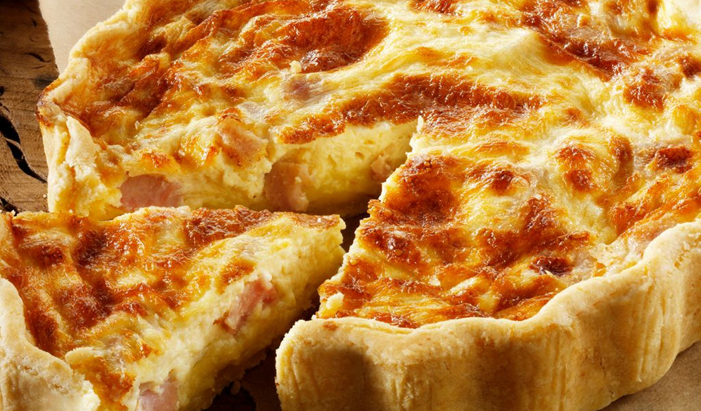

Rechercher une recette
Résultat(s)

Quiche lorraine
Une tarte salée de la cuisine lorraine et de la cuisine française, à base de pâte brisée, de migaine (œufs, crème fraîche) et de lardons.
Voir la recette